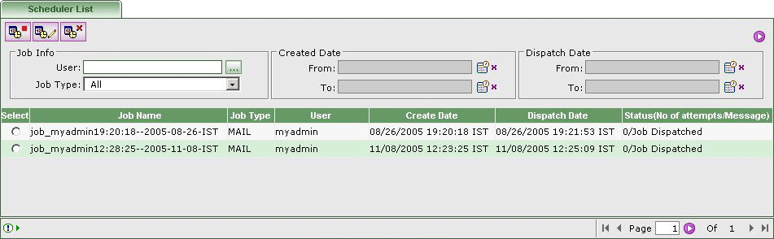

What is Scheduler?
Scheduler is the background process responsible for scheduling mail/fax jobs. Scheduler keeps track of the entire scheduled jobs and dispatches them on the specified DateTime.

Note:
Only Administrator can do operations on the Scheduler List.